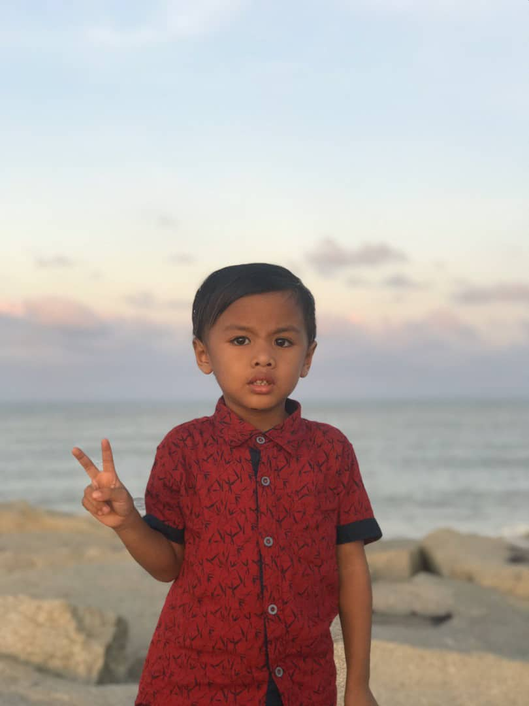

Family
“Family is a unique gift that needs to be appreciated and treasured,
even when they’re driving you crazy. As much as they make you mad,
interrupt you, annoy you, curse at you, try to control you, these are
the people who know you the best and who love you.” – Jenna Morasca
I live in Kubang Kerian, Kota Bharu with my beloved family.
I have a big family which I have 8 siblings, 2 girls & 6 boys.
I am the fourth child, after me there are 4 younger brothers.
| My Family Members : |
- Abdullah bin Abu Bakar (Abah)
- Norizan binti Abdullah (Mama)
- Izwanie binti Mohd Ridzuan (Sister)
- Muhd Afif bin Mohd Ridzuan (Brother)
- Ahmad Fadhil bin Mohd Ridzuan (Brother)
- Siti Aishah binti Mohd Ridzuan (It's Me!)
- Muhd Anas bin Mohd Ridzuan (Brother)
- Ahmad Adam bin Mohd Ridzuan (Brother)
- Ahmad Shahdam bin Mohd Ridzuan (Brother)
- Aqil Asharaf bin Mohd Ridzuan (Brother)
|
My dear cousin, Affiqa who is
the only one I am close to :)

My nephew, Ahmad Idlan.
Very the cheeky boy :)

My cutie niece, Amanda.
She's cute, isn't she? :)
My first niece, Nur Jannah.
She is so adorable :)